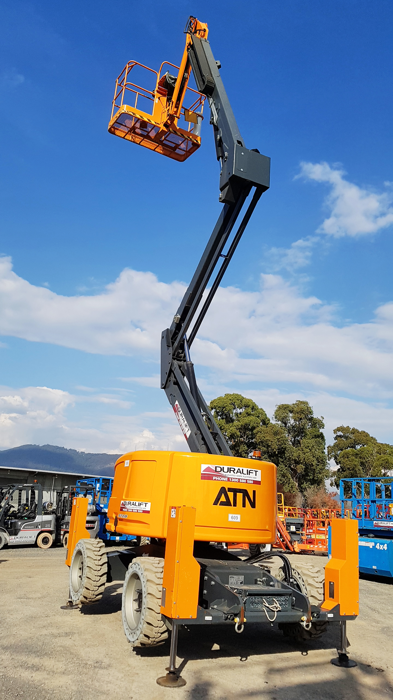

Lifty boi is most likely a type of costruction equipment known as a "Boom Lift." This species is not at all uncommon in Chicago.
Species Characteristics:
- Boom Lifts are named for their characteristically extending "Booms" (see Morphology).
- The common Boom lift represents the type species of the Aerial Work Platform genus.
- Across all of the construction environments in the world, boom lifts are the most common type of Aerial Work Platform.
- They are believed to persist on a diet of star leaves.
- Two subspecies of Boom Lifts exist: the Articulated Boom Lift and the Telescopic Boom Lift.
- Articulated boom lift: features unfolding sections for increasing or decreasing height (lifty boi belongs to this subspecies).
- Articulated boom lift: features telescoping sections that maximize distance in a particular direction.
One of Lifty boi's (Articulated) cousins:
